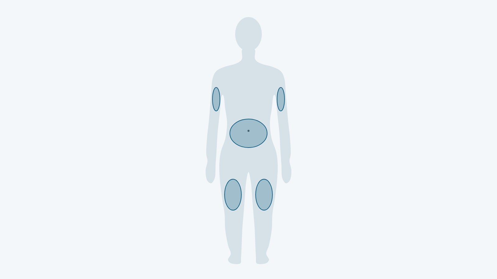

Как колоть Ozempic®: техника инъекции, места введения и дозировка по инструкции

Как колоть Ozempic® (Оземпик, действующее вещество семаглутид), подробно описывают украинская инструкция по медицинскому применению и инструкция по использованию шприц-ручки. Здесь собрано из них то, что нужно во время инъекции: подготовка ручки, шаги введения, места, пропущенная доза и схема дозировки. Препарат, дозу и любое её изменение назначает врач; по европейскому листку-вкладышу, перед первой инъекцией врач или медсестра должны показать, как работать с ручкой.
Коротко: как вводят Ozempic®
Ozempic® вводят подкожно 1 раз в неделю, в любое время суток, независимо от еды: в переднюю брюшную стенку, бедро или плечо. Для каждой инъекции нужна новая игла, а пусковую кнопку держат нажатой, пока счётчик дозы не покажет «0», и ещё медленно считают до 6. По украинской инструкции стартовая доза составляет 0,25 мг в неделю, а дозы выше 1 мг в неделю не рекомендованы. Какую дозу вводить вам и когда её менять, решает врач.
Какая у вас ручка и что в упаковке
В Украине зарегистрированы две многодозовые шприц-ручки Ozempic® с раствором 1,34 мг/мл. Они отличаются дозами, которые можно набрать, и количеством одноразовых игл НовоФайн® Плюс в коробке.
| Ручка | Что содержит | Какие дозы набирает | Игл в упаковке |
|---|---|---|---|
| Ozempic® 0,25 мг/0,5 мг | 2 мг семаглутида в 1,5 мл | новая ручка: 4 дозы по 0,25 мг и 2 дозы по 0,5 мг или 4 дозы по 0,5 мг | 6 |
| Ozempic® 1 мг | 4 мг семаглутида в 3 мл | только 1 мг на дозу (0,74 мл раствора) | 4 |
Ручку используют с одноразовыми иглами НовоФайн® и НовоТвист® длиной до 8 мм. Инструкция советует перед каждой инъекцией проверять название и цветную этикетку ручки, чтобы не перепутать препарат или дозировку.
Инъекция по шагам
Порядок ниже повторяет украинскую инструкцию по использованию шприц-ручки Ozempic®. Его удобно держать под рукой во время первых инъекций.
- Проверить название и цветную этикетку ручки.
- Убедиться, что раствор прозрачный и бесцветный или почти бесцветный. Мутный или окрашенный раствор вводить нельзя.
- Присоединить новую иглу непосредственно перед инъекцией и снять оба колпачка: наружный сохранить, внутренний выбросить.
- Только для новой ручки: проверить поток. Повернуть селектор к символу проверки потока, держать ручку иглой вверх и нажать кнопку до «0»; на кончике иглы должна появиться капля.
- Набрать дозу: поворачивать селектор, пока счётчик не покажет назначенную дозу. Щелчки ручки не считать.
- Ввести иглу под кожу, нажать и удерживать пусковую кнопку, пока счётчик не вернётся к «0».
- Не отпуская кнопку, медленно сосчитать до 6 и только потом извлечь иглу.
- Надеть на иглу наружный колпачок, не касаясь её, аккуратно открутить иглу и выбросить.
- Закрыть ручку крышкой, чтобы защитить раствор от света.
Если извлечь иглу раньше, из её кончика может вытечь раствор, и полная доза не будет введена. Личную ручку и иглы не передают другим людям, а ручку не пытаются заправить повторно. Человеку, который плохо видит и не может прочитать счётчик дозы, инструкция не разрешает пользоваться ручкой без посторонней помощи.
[КОММЕНТАРИЙ ВРАЧА: какие ошибки с ручкой Ozempic® врачи клиники видят чаще всего и как их избежать; 2–3 предложения]
Если при проверке потока капля не появляется
Проверку повторяют до 6 раз. Если капли всё равно нет, меняют иглу; если она не появилась и после этого, ручку утилизируют и берут новую. Поток проверяют только перед первым применением новой ручки, а не перед каждой инъекцией.
Хранение ручки между инъекциями
До первого использования ручку держат в холодильнике при 2–8 °C, не слишком близко к морозильной камере, и не замораживают. После первого применения её хранят при температуре ниже 30 °C или в холодильнике, с надетым колпачком, и через 6 недель утилизируют. Замороженный препарат или побывавший под прямым солнечным светом не вводят; о перевозке и нарушении температуры подробно рассказывает статья о хранении Ozempic® и Mounjaro® (тирзепатид).
Куда колоть и как чередовать места
По украинской инструкции Ozempic® вводят подкожно в область передней брюшной стенки, бедра или плеча. Вводить препарат внутривенно или внутримышечно нельзя. Место инъекции можно менять без коррекции дозы.

Как часто чередовать места, украинская инструкция не уточняет. Американская инструкция (FDA) советует менять место с каждой инъекцией: можно колоть в ту же область тела, но каждый раз в другую точку.
Пропущенная доза и смена дня инъекции
Ozempic® желательно вводить в один и тот же день недели. Украинская инструкция по использованию предлагает вести таблицу на крышке коробки: вписать выбранный день недели и отмечать даты инъекций, чтобы видеть, сколько инъекций сделано и когда. Для пропуска и переноса дня инструкция даёт чёткие границы.
| Ситуация | Что делать по украинской инструкции |
|---|---|
| С пропущенной даты прошло 5 дней или меньше | ввести дозу как можно скорее, следующую ввести в обычный день |
| Прошло больше 5 дней | пропущенную дозу не вводить, следующую ввести в запланированный день |
| Нужно перенести день инъекции | можно, если между двумя дозами не меньше 3 дней (более 72 часов) |
После переноса дня инъекции продолжают раз в неделю уже в новый день. Двойную дозу, чтобы наверстать пропуск, вводить нельзя: об этом прямо сказано в европейском листке-вкладыше. Если непонятно, как поступить с пропущенной дозой, лучше уточнить у врача.
Схема дозировки по украинской инструкции
Дозу семаглутида повышают постепенно. Ниже приведена схема из раздела «Способ применения и дозы»; переходить ли на следующий шаг и когда, решает врач.
| Этап | Доза 1 раз в неделю | Что указано в инструкции |
|---|---|---|
| Первые 4 недели | 0,25 мг | стартовая доза, она не является поддерживающей |
| После 4 недель | 0,5 мг | на ней остаются не меньше 4 недель, прежде чем повышать |
| При необходимости, после не менее 4 недель на 0,5 мг | 1 мг | для дальнейшего улучшения гликемического контроля (уровня глюкозы в крови); дозы выше 1 мг в неделю не рекомендованы |
В европейской и американской инструкциях Ozempic® есть ещё доза 2 мг в неделю, но в Украине она не зарегистрирована. Поэтому схемы с 2 мг с иностранных сайтов к украинским ручкам не относятся. Если Ozempic® добавляют к сульфонилмочевине (таблеткам от диабета, которые усиливают выделение инсулина) или инсулину, врач может уменьшить дозу этих препаратов, чтобы снизить риск гипогликемии, то есть слишком низкого уровня глюкозы в крови; дозу метформина инструкция разрешает не менять.
Частые вопросы
Что делать, если ручка Ozempic® упала?
Инструкция советует присоединить новую иглу и проверить поток раствора перед введением. Если капля не появляется даже после повторных попыток и замены иглы, ручку утилизируют и используют новую.
Что делать, если после нажатия кнопки счётчик не вернулся к «0»?
По украинской инструкции, игла может быть закупорена или повреждена, и нужная доза не введена, хотя счётчик сдвинулся с набранного значения. Иглу снимают и повторяют все шаги, начиная с подготовки ручки с новой иглой, и проверяют, что набрана нужная доза. Во время введения счётчика не касаются, потому что это может прервать инъекцию.
Что делать, если ввели больше, чем назначено?
Нужно сразу связаться с врачом. Украинская инструкция описывает случаи передозировки до 4 мг за одну инъекцию и до 4 мг за неделю; чаще всего они проявлялись тошнотой. Семаглутид выводится медленно: период полувыведения составляет примерно 1 неделю.
Можно ли колоть Ozempic® и инсулин в одну область тела?
Американская инструкция (FDA) разрешает вводить оба препарата в одну область, но отдельными инъекциями и не рядом друг с другом. Смешивать Ozempic® и инсулин в одной инъекции нельзя. Дозу инсулина в начале лечения может уменьшить врач, чтобы снизить риск гипогликемии.
Что дальше
Если Ozempic® вам ещё не назначали, первый шаг — консультация: врач оценит показания и противопоказания, а при необходимости назначит анализы. Чем семаглутид отличается от тирзепатида, объясняет сравнение Mounjaro® и Ozempic®, а о формате терапии в клинике рассказывает страница Ozempic®.
Источники
- Інструкція для медичного застосування лікарського засобу ОЗЕМПІК® (шприц-ручка 1 мг), РП UA/19176/01/01. МОЗ України, дата останнього перегляду 15.07.2026. http://www.drlz.com.ua/ibp/lz_www.nsf/id/4513FF4967F3CA9142258E3C0033EB31/$file/UA191760101_BA8B.pdf
- Інструкції для медичного застосування ОЗЕМПІК® 0,25 мг/0,5 мг і 1 мг з інструкціями з використання шприц-ручки. МОЗ України, Державний реєстр лікарських засобів (запис за наказом МОЗ № 885 від 29.06.2026). http://www.drlz.com.ua/ibp/lz_www.nsf/id/2D837A4C00C398AB42258E2C00345419/$file/UA191760101_304C.mht
- ОЗЕМПІК®, РП UA/19176/01/01: реєстраційна картка (форма випуску, склад). Державний реєстр лікарських засобів України, 2026. http://www.drlz.com.ua/ibp/ddsite.nsf/all/shlz1?opendocument&stype=BA8B8927450EC695C2258E370023202D
- ВЕГОВІ® ФЛЕКСТАЧ®, РП UA/20617/01/01–05: реєстраційна картка. Державний реєстр лікарських засобів України, 2026. http://www.drlz.com.ua/ibp/ddsite.nsf/all/shlz1?opendocument&stype=0A4112B68E38398EC2258E92001BA7C9
- Ozempic: EPAR Product Information (SmPC, Package leaflet, Instructions for use). European Medicines Agency, 2026. https://www.ema.europa.eu/en/documents/product-information/ozempic-epar-product-information_en.pdf
- OZEMPIC (semaglutide) injection: Prescribing Information, Medication Guide. Novo Nordisk, FDA / DailyMed, June 2026. https://dailymed.nlm.nih.gov/dailymed/drugInfo.cfm?setid=adec4fd2-6858-4c99-91d4-531f5f2a2d79
Материал носит информационный характер и не заменяет консультацию врача. Препараты назначает врач после консультации.
Читайте также